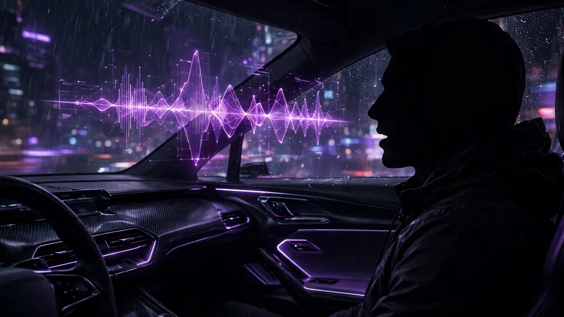
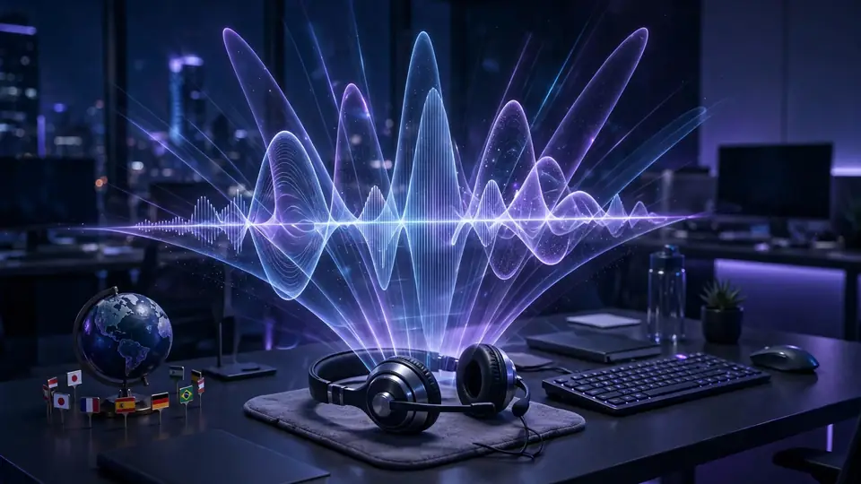

xAI launches Grok Voice 3.0: #1 speech-to-speech model at the same $0.08 per minute
xAI announced Grok Voice 3.0 today, calling it the world’s most intelligent speech-to-speech model. The new model tops Artificial Analysis’s Speech-to-Speech Index with a score of 86.9, ships in the company’s Voice Agent API at the same price as its predecessor — $0.08 per minute — and agents using the grok-voice-latest alias were switched over automatically, no changes needed.
The scoreboard
In xAI’s announcement, the headline number comes from independent testing by Artificial Analysis, dated October 13 — the day before launch. Grok Voice 3.0 scores 86.9 on the Speech-to-Speech Index, ahead of GPT-Live-1 (Astra, Medium) at 83.2, Gemini 3.8 Live (Extended Thinking, High) at 82.6, and its own predecessor Grok Voice 2.0 at 81.3.
The component scores show where the gains landed: Big Bench Audio speech reasoning rises to 98.5% from 97.2%, Speech Agent Arena preference Elo climbs to 1070 from 1011, task success edges to 94.8% from 94.6%, and Full Duplex Bench — a measure of how naturally a model handles pauses, turn-taking, and interruptions — reaches 97.0% from 95.1%.
On τ-Voice, built from simulated customer-support calls, task success jumps to 71.6% from 56.5%. xAI describes that as comparable with GPT-Live-1 (Astra) at roughly 40% lower latency. And on ServiceNow’s EVA-Bench, the open-source benchmark for enterprise voice agents across 200+ realistic scenarios, Grok Voice 3.0 takes the highest accuracy score at 74% and the best joint score on accuracy and customer experience. Artificial Analysis also measured a lower cost per task than GPT-Live-1 (Astra, Medium) and GPT-Realtime-2.1 on its Big Bench Audio run.
Already working the phones
This is not a lab demo looking for a use case. Grok Voice already handles millions of conversations a day inside Tesla vehicles, where drivers use Connectors for simple requests like checking a calendar or answering an email and Grok Bot for bigger tasks like ordering a coffee or booking dinner — all hands-free. The new model also powers Grok Bot’s voice mode.

The more telling deployment is Starlink’s call centers, where Grok Voice answers 20,000 customer calls a day across multiple languages. Roughly 70% are resolved with no human in the loop, and one in four sales calls ends in a purchase before the caller hangs up. One agent built on Grok Voice 3.0 verifies customers, troubleshoots hardware, issues credits, and ships replacement equipment.

Price unchanged, migration instant
The pricing move is aggressive by absence: $0.08 per minute ($4.80 per hour), identical to Grok Voice 2.0. Developers on grok-voice-latest were migrated automatically, with the same endpoint, session parameters, and events. iClarified notes the pricing docs also list a separate $0.004 charge per text input, and the release notes add short-lived ephemeral tokens for client-side authentication, so apps no longer need to expose API keys.
Why it matters
The voice-agent race has become three-dimensional: benchmark rank, latency, and cost per task. Grok Voice 3.0 claims all three — top of the composite index, sub-second time to first audio (0.81 seconds against 1.34 for the GPT-Live-1 configuration xAI compared it to), and the cheapest cost per task of the bunch.
What to watch: independent replication of the numbers — Artificial Analysis’s results were dated October 13, a day before launch, which is xAI’s framing — and whether OpenAI and Google answer with their own voice benchmarks. And the auto-upgrade strategy is a quiet power move: every existing agent got better overnight, no code changes, which is how you turn a model launch into distribution.